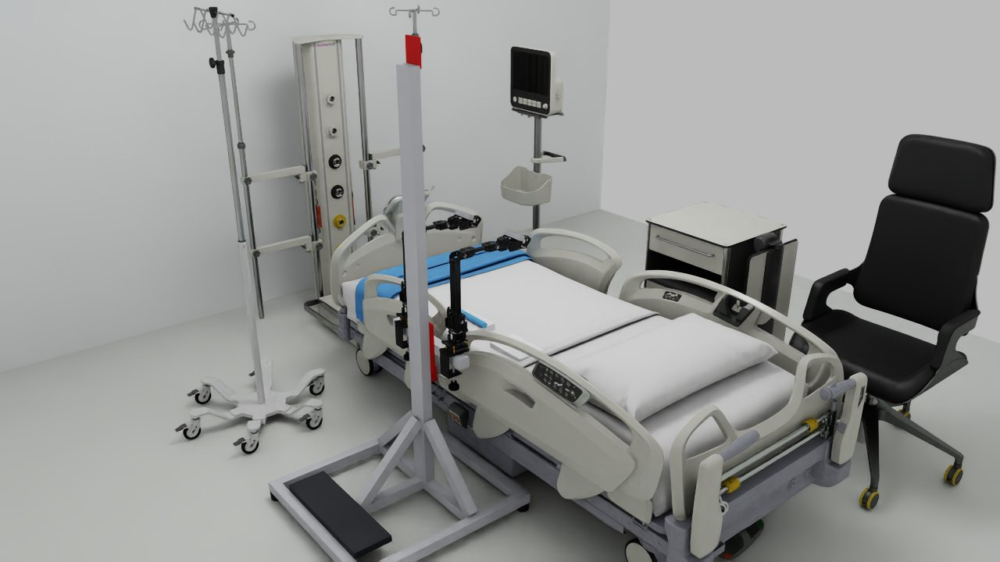
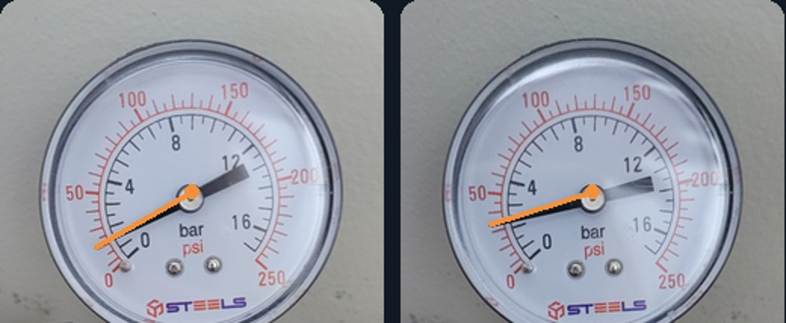
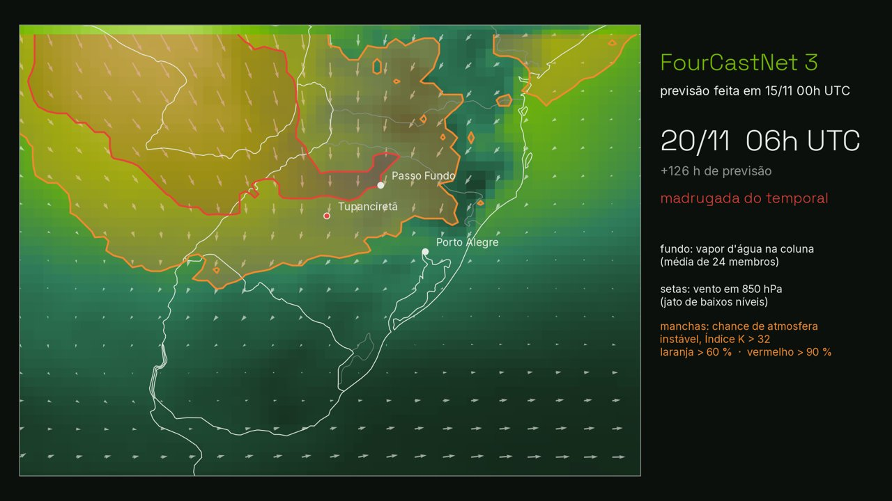

Projetos do LABRIOTLABRIOT projects
O Laboratório de Robótica e IoT da UTFPR Ponta Grossa leva robótica, gêmeos digitais e IA para problemas reais da saúde, da indústria e do clima. Cada projeto tem uma página aberta, com o que já foi feito e o que ainda falta.
The Robotics and IoT Lab at UTFPR Ponta Grossa, Brazil, brings robotics, digital twins and AI to real problems in health, industry and weather. Each project has an open page with what has been done and what is still missing.
Próximo eventoUpcoming event
IA Summit Passo Fundo
UPF Parque, Passo Fundo (RS). A Dra. Itamar Iliuk é palestrante principal e leva três destes projetos ao palco.
UPF Parque, Passo Fundo, Brazil. Dr. Itamar Iliuk is a keynote speaker and brings three of these projects to the stage.
- 09h00–11h00WorkshopWorkshop · Digital Twin Hands-on Arena, Prédio 3Arena, Building 3
- 16h45–17h30PainelPanel · Do prompt à empresa autônomaFrom prompt to autonomous company Stage Valley, Prédio 1Stage Valley, Building 1
- 19h30–20h10Palestra principalKeynote · Como gêmeos digitais criam empresas mais inteligentes, rápidas e eficientesHow digital twins make companies smarter, faster and more efficient Stage Valley, Prédio 1Stage Valley, Building 1

ICU-GuardBot
Um robô de beira de leito que ajuda a enfermagem da UTI a perceber cedo sinais de sepse. Desenvolvido primeiro em simulação, com NVIDIA Isaac Sim e Omniverse.
A bedside robot that helps ICU nurses notice early signs of sepsis. Developed simulation-first with NVIDIA Isaac Sim and Omniverse.
Ver o projeto →See the project →
Industrial Gauge Monitor (IGM)
Transforma os manômetros analógicos já instalados em sensores conectados: câmera de baixo custo, NVIDIA Cosmos rodando dentro da planta e a pressão no SCADA, sem trocar o instrumento.
Turns the analog pressure gauges already installed into connected sensors: a low-cost camera, NVIDIA Cosmos running inside the plant and the pressure in SCADA, without replacing the instrument.
Ver o projeto →See the project →
Digital Twin Hands-on
Uma célula de paletização com UR10 que aprendeu a tarefa no NVIDIA Isaac Lab e foi conferida no software do controlador da Universal Robots, mais os materiais abertos do workshop.
A UR10 palletizing cell that learned the task in NVIDIA Isaac Lab and was checked in the Universal Robots controller software, plus the open workshop materials.
Ver o projeto →See the project →
Earth-2 RS
O que o FourCastNet 3, do NVIDIA Earth-2, teria visto dias antes do temporal de Tupanciretã de 20/11/2026 e da enchente de maio de 2024 no Rio Grande do Sul.
What FourCastNet 3, from NVIDIA Earth-2, would have seen days before the November 20, 2026 storm in Tupanciretã and the May 2024 flood in Rio Grande do Sul.
Ver o projeto →See the project →O LABRIOT é membro do NVIDIA Inception program e é coordenado pela Dra. Itamar Iliuk, NVIDIA Omniverse Ambassador. Quer levar um destes projetos para a sua empresa, hospital ou cidade? Fale com a gente no LinkedIn.
LABRIOT is a member of the NVIDIA Inception program and is led by Dr. Itamar Iliuk, NVIDIA Omniverse Ambassador. Want to bring one of these projects to your company, hospital or city? Reach out on LinkedIn.